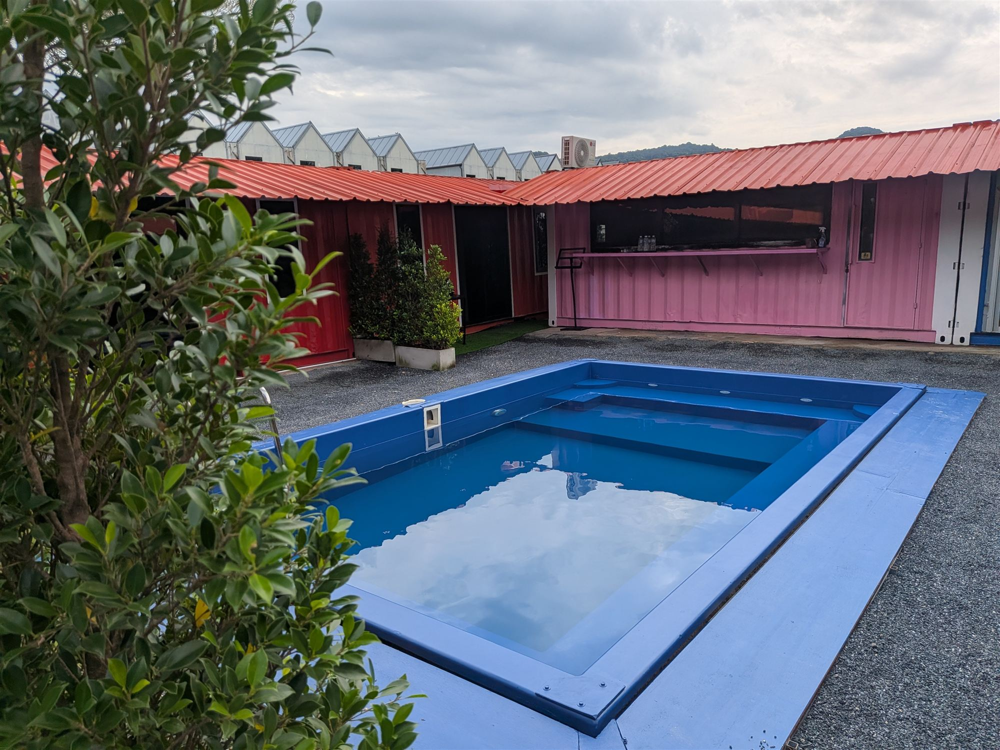

Pool
Ett dopp några steg från rummet, med containrarna och bergen i bakgrunden.
เดอะ บีช บ็อกซ์

Isolerade, luftkonditionerade fyrbäddsrum i färgglatt målade fraktcontainrar, runt en pool och en grön innergård, några steg från Noppharat Thara Beach.
Så bokar du
Skicka dina datum på WhatsApp eller LINE så håller vi en säng åt dig.
Från ฿ — per säng och natt

The Beach Box består av ombyggda fraktcontainrar, var och en målad i sin egen färg, uppställda på rad under ett rött tak runt en grön innergård. Varje rum har fyra sängar och egen luftkonditionering, så du delar med tre personer, inte trettio.
Kliv ut genom grinden så står du på strandvägen. Nattmarknaden, kaféer och en dygnetruntöppen 7-Eleven ligger tre till fyra minuters promenad bort.
Det här finns i närheten
Boka en säng eller ta hela rummet med dina vänner. Badrummen ligger i en egen byggnad några steg från din dörr.
Från ฿ — per säng och natt
Se rummenEn pool några steg från sängen och en grön innergård med sittplatser utanför varje dörr.
Se faciliteterna
Ett dopp några steg från rummet, med containrarna och bergen i bakgrunden.

En gräsmatta mitt i alltihop, med sittplatser utanför varje dörr.
Vi ligger i Noppharat Thara-änden av Ao Nang: den lugnare delen av stranden, med longtailbåtar ut till öarna och Landmark Night Market nära intill.

| Plats | Till fots |
|---|---|
| Noppharat Thara Beach | ungefär 30 steg |
| Starbucks, Ao Nang Landmark | 180 m · 3 min |
| 7-Eleven (öppet dygnet runt) | 230 m · 3 min |
| KFC, Ao Nang Landmark | 240 m · 3 min |
| Ao Nang Landmark Night Market | 300 m · 4 min |